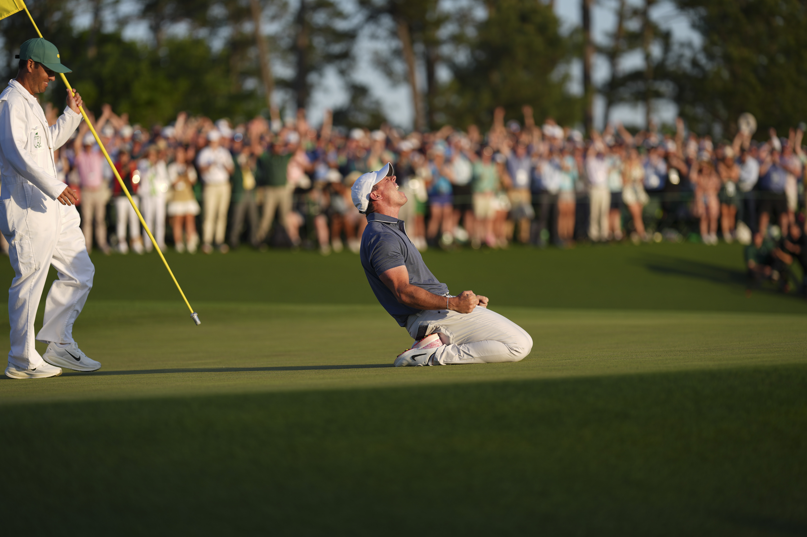
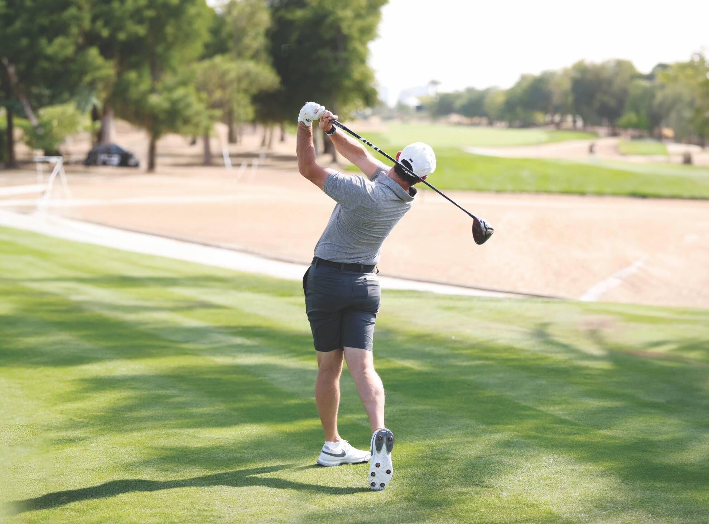
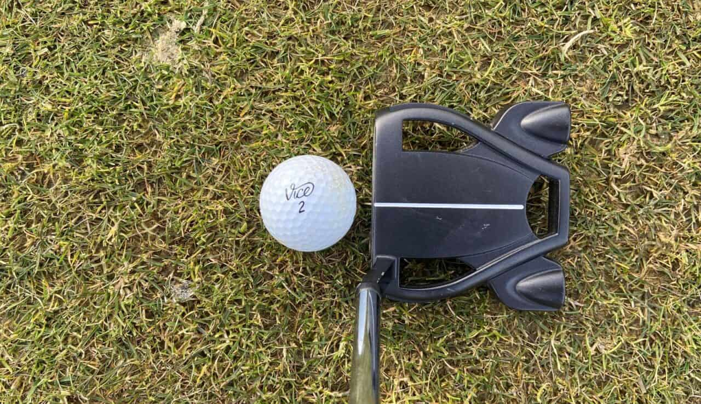

El grip correcto
El agarre es fundamental para un swing consistente. Las manos deben trabajar como una unidad
, dice el entrenador Jose Maria.
Consejos y secretos desde el green

"El golf es el deporte mas cercano a la perfeccion que he conocido" - Arnold Palmer
El golf es un deporte de precision cuyo objetivo es introducir una bola en los hoyos dispuestos a lo largo del campo con el menor numero de golpes posibles, utilizando para cada golpe diferentes palos. Al igual que en la mayoria de los deportes, el objetivo es completar el recorrido en el menor numero de intentos.
Se juega en un campo de 18 hoyos (aunque existen campos de 9 hoyos), cada uno con su propia dificultad. El golf es unico porque no existe un campo de juego estandarizado, cada campo es diferente y presenta sus propios desafios.
Para los principiantes o rookies, el golf puede parecer complicado al principio, pero con practica y paciencia, se convierte en un deporte apasionante que combina tecnica, estrategia y control mental.




1. Cual es el numero maximo de palos permitidos en una bolsa de golf
2. Como se llama el area donde se juega el golf
3. Que significa birdie
El agarre es fundamental para un swing consistente. Las manos deben trabajar como una unidad
, dice el entrenador Jose Maria.
La espalda recta y las rodillas ligeramente flexionadas. La alineacion es el 50 por ciento del exito del golpe
.